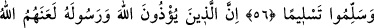
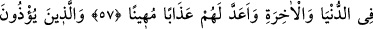
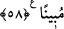

PEYGAMBER’E
ÇOK SALEVÂT GETİRİN
56. Allah ve melekleri, Peygamber’e çok salevât getirirler. Ey mü’minler! Siz de
O’na salevât getirin ve tam bir teslimiyetle selam verin.
57. Allah ve Rasûlü’nü incitenlere Allah, dünyâda ve ahirette lânet etmiş ve
onlar için horlayıcı bir azap hazırlamıştır.
58. Mü’min erkeklere ve mü’min kadınlara, yapmadıkları bir şeyden dolayı
eziyet edenler, şüphesiz bir iftira ve apaçık bir günah yüklenmişlerdir.
“Allah ve melekleri, Peygamber’e çok salevât getirirler.” Yâni Hz. Peygamber
(s.a.)’in şerefini ızhâr ederek ve kendisine tâzim göstererek O’nun hayrına ve işlerinin
salâhına olacak hususlara îtina gösterirler.
Bilesin ki ehlüllahın büyüklerinden keşf ehline göre melekler iki kısımdır: Bir kısmı
ruhlar mertebesinden cisimler mertebesine inmişlerdir. İnsanların kesif cisimleri olduğu
gibi onların da latîf cisimleri vardır. Onlar Âdem (a.s.)’a secde etmekle emrolunan
meleklerdir. Cebrâil (a.s.) ve diğerleri gibi büyükleri ve küçükleriyle bütün yer ve gök
melekleri, onlara dahildir. Hiç bir melek bunların dışında değildir. Bir kısım melekler
de ruhlar âleminde kalmışlar, lâtif olsun kesîf olsun cismânî elbiselerden
soyunmuşlardır. Onlar “Allah: “Ey İblis! İki elimle yarattığıma secde etmekten seni
men eden nedir? Böbürlendin mi yoksa yücelerden misin?” dedi.” (Sâd, 38/75) âyeti
ile işâret edilen müheyyemûn (Hak aşığı) meleklerdir. Onlara Âdem (a.s.)’a secde
etmeleri emredilmemişti. Çünkü onlar Hakk’ı müşâhede denizine daldıkları için varlık
âleminde kendilerini de mutlak olarak kendileri dışındaki mevcûdâtı da hissetmezler.
İnsan ise hâlinin şerefi ve kemâlinin rütbesi bakımından bu iki kısım melekten üstündür.
Çünkü insan Allah Teâlâ’nın cemal ve celal kabzalarıyla yaratılmıştır. Melekler ise
böyle değildir. Onlar Allah Teâlâ’nın yalnız cemal eliyle yaratılmışlardır. Nitekim
Câmî şu sözüyle buna işâret etmiştir: